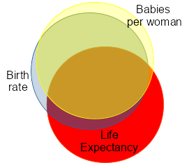

Multiple regression is an extension of simple linear regression that uses more than one predictor to model a single response variable. As you learned in the lecture preceding this exercise, using two predictors fits a plane through the dependent variable, and each new predictor adds another dimension to the surface (beyond two predictors it becomes difficult to visualize the surface, but the process is fundamentally the same above three dimensions). The equation for a multiple regression is a simple extension of the linear regression equation, in which a new product of a slope coefficient and variable is added for each additional predictor:
The statistical output associated with a multiple regression is also
similar to simple linear regression output, but with some exceptions
that we'll explore today.
We will use data from gapminder.org to explore how multiple regression can be used to either enhance significant relationships (i.e. statistically eliminating statistical noise caused by a nuisance variable), or to avoid spurious effects of a confounding variable. We will also explore how correlations between predictor variables can affect interpretation of our results.
Start a new project for today's exercise in R Studio (call the folder "multreg"), and start a new R script for your commands. The data set we will use today is here. Download and import the file into R Studio - call the data set "gapminder".
Before we go on, a couple of points about multiple regression data.
Data organization: Data should be in a "multivariate" arrangement. Each row is an individual observation (a different country, in this case), and each column will be a variable measured on the observation, either the response variable or one of the predictors.
Missing data: Any missing numbers for any of the variables cause the entire row to be dropped from the analysis. For example, Afghanistan was not included in this data set because per-capita gross domestic product and HIV infection rate were missing. You will see that using multiple predictors can have some tremendous benefits, but one cost is that it is very important that every measurement is collected for every variable. Having to drop some of your hard work because you forgot to record one variable is heartbreaking, don't let this happen to you.
The first column in the data set is Country. Rather than being a variable for analysis, this is meant to be a label for the row, which will be used to label graphs in later steps. To set the row labels, use the command:
rownames(gapminder) <- gapminder$Country
The variables included in the data set are:
- Life expectancy - this is the average lifespan expected at birth. Infant mortality is included in this measure. Life expectancy will be the response variable for all of our analyses.
- Log of Population density - log of the number of people per unit area. This is at measured at the level of the entire country - population size divided by the area of the country.
- Log of Per Capita GDP - gross domestic product divided by population size, then log transformed.
- Cholesterol - total cholesterol in blood of men in mmol/L.
Standardized for differences in age distribution.
- Tuberculosis rate - all forms of TB, existing cases per 100,000 people in the population.
- Maternal mortality - maternal deaths per live birth, multiplied by 100,000 (so, maternal mortality ratio per 100,000 live births).
- Babies per woman - children per woman in the population, including women who do not have children.
- Crude birth rate - births per 1000 people in the population, men and
women, with children and without.
Log transformation means that the numbers are (natural) logs of each measurement. To use regression we need the relationship between life expectancy and each of the predictors to be linear, and log transformation can change a curvilinear relationship into a linear one. We'll learn more about transformations when we talk about assumptions of GLM later this semester, but for now just bear in mind that the units are on a natural log scale for these variables - the minimum logGDP of 4.539 is e4.539 = $93.60 per person, and the maximum of 10.940 is e10.940 = $56,387 dollars per person.
To get an idea of the patterns in the data set, produce a scatterplot matrix of all of the variables with the command:
pairs(gapminder[,-1])
This will give you a matrix of scatter plots with the names of the variables on the main diagonal. If you click the "Zoom" button above the plot it will pop out into its own window, which you can resize to full screen so you can see better.
The names label the x-axis if you project up or down, and label the y-axis if you project left or right. This means that every pair of variables is plotted twice, but with the x-variable and y-variable switched.
Copy and paste this graph into a Word file, and make a mental note of which ones seem to have strong relationships with life expectancy (the dependent variable we will use today), and which predictors seem to be highly correlated with one another.
Okay, time to run some regressions.
Case 1: Multiple regression may enhance the significance of relationships between variables.
I won't be telling you what to name your models as you work through the instructions, but do get into the habit of using a sensible naming convention so you can keep track of what they are. For example, LinearModel.1 is a poor choice compared with life.pop.gdp.lm - the latter indicates which variables are included, and that the object is a fitted linear model rather than a data set.
1. Do a linear model of Life.expectancy (response) on logPop.Density (predictor). Record the regression coefficient and p-value on your worksheet. With just one predictor, this is a simple linear regression.
Also record the statistics for the "omnibus" test of the model - this is reported below the coefficients, starting with "Residual standard error:". We are primarily interested in the explained variation (the Multiple R-squared), and the hypothesis test, which is based on the F-statistic, numerator and denominator degrees of freedom, and p-value.
You'll see there is a positive relationship between life expectancy and population density. However, we might expect other factors to affect life expectancy, in addition to the density of the population. Wealth is expected to affect life expectancy as well, because wealthier countries are able to afford better health care, better sanitation, and better nutrition, all of which should have positive effects on life expectancy. So, two countries with identical population densities are likely to have different life expectancies if one is wealthier than the other, and this variation due to wealth will add scatter around the line if we only use population density as a predictor. We can see what happens to the slope and the p-value for logPop.Density when we add logGDP as a predictor.
2. Do a linear model of Life.expectancy on logPop.Density and logGDP. Since this analysis uses more than one predictor it is a "multiple regression", and all you need to do is to include both logPop.Density and logGDP in the model with a + in between them, like so:
lm(Life.expectancy ~ logPop.Density + logGDP, data = gapminder)
Assign this model to an object, and use summary() to obtain coefficients and the results of the omnibus test for your worksheet.
You should see that including logGDP made the p-value for logPop.Density smaller, but also made the slope smaller. Slopes in multiple regression are partial relationships, meaning they are based on the collective effects of the predictors on the response. All else being equal, a bigger slope will generate a smaller p-value than a smaller slope, but in this case the reduction in the size of the slope due to including logGDP was more than made up for by the reduction in residual sums of squares. You can see the R2 went way up when logGDP was added, which means that we explained a lot more variation in life expectancy when we included it - when logGDP was not included, all of that variation due to logGDP was treated as random, unexplained variation, and was left in the residual SS. Since we're comparing explained variation to unexplained variation in our ANOVA table, if we leave some variation in the residual term that could have been explained by another predictor the p-value for the test of the variables included will be bigger. Thus, leaving logGDP out made the p-value on the test of logPop.Density go up.
3. To visualize what is happening, we will make a 3-D graph of Life.expectancy, logPop.Density, and logGDP. The function we need is in the library "car" (short for "companion to applied regression"), which you can load now with:
library(car)
The command for the 3D plot is called scatter3d(), and it has several arguments. For longer commands like this one you can break the command with carriage returns, and then select all of the lines before hitting the "Run" button:
scatter3d(Life.expectancy~logPop.Density+logGDP,
data=gapminder,
fit="linear",
residuals=TRUE,
bg="white",
axis.scales=TRUE,
grid=TRUE,
ellipsoid=FALSE)
The graph may pop up behind the R Studio window, move it if you don't see the graph.
When the graph first appears, it will be oriented so that the plane
you're fitting through the data is viewed from the side - it looks like
a line through the scatter of data. Positive residuals are shown in
green, and negative residuals are shown in red. You'll see that the two
predictors form the bottom axes on the graph.
Grab the plot with your mouse and rotate it so that logPop.Density is horizontal, Life.expectancy is vertical, and logGDP is pointed directly into the screen - this will show you what the relationship looks like between life expectancy and population density if GDP isn't accounted for.
You should be able to see two things:
- the relationship is really messy if you only look at logPop.Density as a predictor, and
- the plane through the data is slanted away from you, into the
screen, showing that some of the variability along the y-axis is
because of variation in GDP.
Now, grab the graph with the mouse again, and arrange it so that logGDP is horizontal, life expectancy is vertical, and population density is into the monitor. This orientation looks better - closer to a line through a data scatter. This is because logGDP has a bigger effect on life expectancy than does logPop.Density, and this tilts the plane more strongly along the logGDP axis.
4. You can identify points on the graph with the command:
with(gapminder, Identify3d(logPop.Density, logGDP, Life.expectancy, axis.scales=TRUE, labels=row.names(gapminder)))
You can now find points that have the longest positive and negative residuals, and use the right mouse button to drag a box around the points (don't just click, or you'll have to start over). The case names will then be displayed on the graph. Find which countries have the longest life expectancies for their GDP, and which have the shortest, based on the sizes of their residuals.
If you're using a Mac, I believe you need to hold down the CTRL button while you drag a box to emulate a right mouse button.
When you're done, right-click on the 3-D graph once to turn off the identify3D() function.
5. It would be nice to more quantitatively assess which predictor had more effect on life expectancy, but we can't compare the slopes directly. Slopes are related to the strength of the relationship between predictor and response, but slopes also have units (specifically, y units divided by x units). Regression coefficients can be different just because the units of measure for the predictors are different.
This can be addressed by using "standardized coefficients", which converts the units on the slopes to standard deviations. R doesn't report these by default, but I have written a function that will calculate standardized coefficients for you. You can add this new function into R by:
- Right click on this link and select "Save link as...". Save the file in your project folder.
- Select File → Open, and find the file you just downloaded - it's called stdcoeff.R
- Click "Source" to read the entire script file into R - this will
create a new command called stdcoeff()
Now, below the script you just submitted, type the command:
stdcoeff(your.fitted.model.name)
be sure to replace "your.fitted.model.name" with the actual name of the fitted model you used, and then click Submit. You will see the standardized coefficients in the Output Window, they should be 0.15 for logPop.Density, and 0.79 for logGDP.
The standardized coefficients tell you that for each standard deviation of increase in logPopDensity you gain 0.15 standard deviations of life expectancy, but for each standard deviation of increase in logGDP you gain 0.79 standard deviations of life expectancy - logGDP has over five times as much effect on life expectancy as logPopDensity.
Case 2: Multiple regression reducing the strength of relationships between variables.
1. Do a linear model of Life.expectancy (response) against Cholesterol (predictor). Record the coefficient and p-value on your assignment sheet.
2. This unexpected positive relationship at the country level is suspicious - it's unlikely that more cholesterol is good for your longevity, and the relationship could easily be due to correlations between both cholesterol and life expectancy with wealth and the quality health care that tends to go along with it. If cholesterol really is good for you, it should be detectable as an effect that is above and beyond the effects of wealth and the general quality of health care in the country.
To check this, do a (multiple) regression of Life.expectancy against Cholesterol, logGDP (as an indicator of wealth), Maternal.mortality, and TB (as indicators of effectiveness of health care and public health systems). Record the coefficients on your worksheet.
3. Now we'll see how the types of sums of squares we use affects our interpretation of the results.
The anova() command we have been using so far gives sequential ("Type I") sums of squares, so use it now to get an ANOVA table with Type I sums of squares.
The car library we loaded earlier has an Anova() command (note the capital A) that allows us to select either Type II or Type III, with Type II as default. Use the command:
Anova(your.fitted.model.name)
to get your Type II table.
As you answer the question about why Cholesterol was only significant when you ran the analysis with Type I SS, think in terms of shared variation with other predictors - how is the correlated part of the predictors treated when you use Type I SS? How is it treated when you use Type II SS?
Case 3: Correlated predictors cause problems
in interpretation.
Two of the variables in the data set are highly correlated with one another: babies per woman, and birth rate. Babies per woman is calculated as number of babies born, divided by number of women in the country. Birth rate also uses the number of babies born, but it is divided by the number of people in the country. If every country had the same sex ratio the numbers would be perfectly correlated, and only variations in sex ratio weaken the correlation between them; since sex ratios are not that variable, these two variables are just slightly different measures of the same thing.
First, let's confirm that each variable by itself is a significant predictor of life expectancy.
1. Do a linear model of Life.expectancy on Birth.rate. Report the coefficients and p-value.
2. Do a linear model of Life.expectancy on Babies.per.woman.
Given that both are good predictors, it seems as though including both
in the same model would be better still.
3. Now, do (multiple) regression of Life.expectancy on both Birth.rate and Babies.per.woman. Report the coefficients and p-values.
When you include both of the predictors at the same time, you'll see that one of the predictors is still highly significant, and the other is no longer significant at all. It's obvious enough that this is the case, but it's not so obvious how it could be true. Certainly it's due to the fact that birth rate and babies per woman are correlated - if they were independent then we would get the same slope coefficients whether we included both of them or just one at a time. The correlation between birth rate and babies per woman is very high, r = 0.983, but this correlation applies equally to both of them. How, then, is it possible for this high correlation to result in babies per woman being a poor predictor of life expectancy when it is included with birth rate, but for birth rate to still be a significant predictor?
|
We can see what is happening using a Venn diagram. The blue circle represents birth rate, and the yellow circle represents babies per woman. Ignoring life expectancy for the moment, you can see that the amount of overlap between the two predictors is high to reflect the correlation of 0.983 between them. Think of the overlapping area between them as the variation that they share, and the non-overlapping parts as variation in babies per woman that isn't shared with birth rate (yellow sliver) and variation in birth rate that isn't shared with babies per woman (blue sliver). |
 |
| Now, the overlap of the yellow and blue circles with the red life expectancy circle represents the amount of variation in life expectancy that is explained by birth rate and babies per woman. Because the correlation between the predictors is high, most of the variation in life expectancy that is explained is due to the variation that is shared between the predictors. But, you can see that the blue sliver also overlaps life expectancy, whereas the yellow sliver does not. This shows that, even though there is very little independent variation between the predictors, the independent part of birth rate explains variation in life expectancy, but the independent part of babies per woman does not. So, this means that the amount of correlation between the predictors is the cause of the problem, but the result of including two correlated predictors in a model depends on whether it is the shared part of the predictors or the independent parts that explain variation in the response. | |
|
That's easy enough to illustrate, but let's look at how this works with the actual data. The two predictor variables are plotted to the right. The regression line represents the shared variation (i.e. the overlap in the yellow and blue circles), and the distances from points to the line are the independent variation (the parts of the yellow and blue circles that don't overlap). |
|
|
We can re-express each of the babies per woman data points as the combination of a predicted value (i.e. the position along the line in the graph above) and a residual. The predicted values are the variation shared by the two variables, and the residual is variation in Babies.per.woman that is independent of Birth.rate. Given what happened when we included birth rate and babies per woman in the same model, do you think that the predicted values will be significant? What about the residuals? |
|
If you want to try this out yourself, you can run the commands below in the Rgui window - enter each one at the command prompt (>). If you just want the result, skip down to the ANOVA table, below.
First, we would need a model of the relationship between Babies.per.woman and Birth.rate.
bpw.br.lm <- lm(Babies.per.woman ~ Birth.rate, data = gapminder)
Now, we can pull the predicted values representing variation shared between babies per woman and birth rate using:
bpw.shared <- predict(bpw.br.lm)
and we can pull out the residuals representing variation in babies per woman that is independent of birth rate:
bpw.independent <- residuals(bpw.br.lm)
Now let's see whether it's the shared part or independent part of babies per woman that's associated with life expectancy. Fit the model:
bpw.lm <- lm(Life.expectancy ~ bpw.shared + bpw.independent, data = gapminder)
We can get the ANOVA table using:
Anova(bpw.lm)
which gives us this ANOVA table:
Response: Life.expectancy
Sum Sq Df F value
Pr(>F)
bpw.shared 12720.5 1 450.4982
<2e-16 ***
bpw.independent 43.4 1
1.5361 0.217
Residuals 4489.6
159
You'll see that the bpw.independent line has the same p-value as babies per woman had when it was in a model with birth rate - in both cases what is being tested is the ability of babies per woman to predict life expectancy, above and beyond what birth rate can predict. Most of the variation in life expectancy that babies per woman is able to predict is shared with birth rate, so the independent part of babies per woman isn't significant.
What about birth rate? Would we expect only the shared part of birth rate to explain variation in life expectancy?
Click here to see if you're right.
That's it! Answer the questions on the worksheet based on your results.